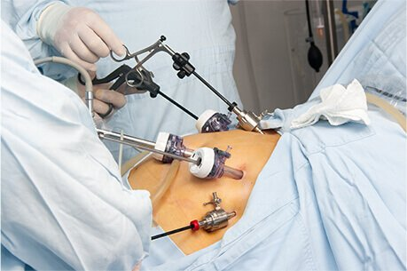

Experience gold-standard, minimally invasive Laparoscopic Keyhole Surgery with Dr. Atul Peters at Max Super Speciality Hospital, Saket. Utilizing state-of-the-art 4K Ultra HD visualization for Gallbladder, Hernia, and GI surgeries, offering less pain, virtually invisible scars, and rapid 24-hour discharge.

Crystal Clear Vision
Overnight Discharge
5-10mm Tiny Incisions
All Major Insurance
Laparoscopic surgery, also known as keyhole or minimal access surgery, is a modern surgical technique where operations in the abdomen or pelvis are performed through small incisions (usually 0.5–1.5 cm) rather than large, open cuts.
The surgeon inserts a laparoscope—a slender tube equipped with a high-intensity light and a 4K high-resolution camera—into the body. This sends real-time, magnified video to monitors in the operating room, guiding the surgeon's specialized instruments.
Long, slender surgical tools are inserted through other small incisions (ports) to perform the procedure. This eliminates the need for large muscle-cutting incisions, dramatically reducing trauma to the body.
Why elective keyhole surgery is safer than waiting for an emergency.
Surgery is planned in advance for conditions like reducible hernias or symptomatic gallstones. Recovery is incredibly fast and complication risks are near zero.
Symptoms worsen severely (e.g., incarcerated hernia, acute gallbladder inflammation). Surgery must happen within days to prevent permanent damage.
Life-threatening complications (strangulation, rupture, sepsis). Requires immediate surgery, often necessitating an open approach rather than keyhole.
The shift from traditional open surgery to laparoscopy has revolutionized patient recovery and outcomes.
Because abdominal muscles are not severely cut, post-operative pain is significantly reduced. Most patients stand up within 4-6 hours and are discharged from the hospital within 24 to 48 hours.
The tiny 5mm to 10mm incisions are closed with internal dissolvable stitches and surgical glue. Over a few months, these heal into faint, almost invisible hairline marks on the skin.
Smaller incisions drastically lower the risk of surgical site infections (SSIs) and incisional hernias, leading to a much safer and smoother healing process.
Dr. Atul Peters routinely performs complex minimally invasive surgeries across multiple specialties.
Laparoscopic Cholecystectomy is the gold standard for treating symptomatic gallstones, utilizing Critical View of Safety (CVS) protocols to ensure 100% biliary safety and overnight discharge.
Using eTEP and TAPP techniques, mesh is placed in the extraperitoneal space without opening the abdomen fully, offering permanent, pain-free repair for inguinal and ventral hernias.
Emergency or elective removal of an inflamed appendix is performed rapidly and safely through 3 tiny holes, ensuring quick recovery from acute abdominal pain.
Because keyhole surgery is so minimally invasive, the recovery timeline is drastically accelerated.
You will wake up with tiny bandages over your incisions. Most patients are encouraged to sit up and take a short walk within 4-6 hours to prevent blood clots. Discharge usually happens the very next morning.
You may experience mild shoulder pain (a normal side effect of the CO2 gas used to inflate the abdomen during surgery) which fades in a day or two. You can shower and eat normally. Most people return to desk jobs by day 5.
The surgical glue covering the incisions will flake off, leaving tiny marks. By week 4, depending on your surgeon's clearance, you can resume all normal activities including strenuous gym workouts and heavy lifting.
Dr. Atul Peters is the Senior Director & Head of Bariatric, Minimal Access & Robotic Surgery at Max Super Speciality Hospital, Saket.
While laparoscopic surgery is the standard of care for most abdominal surgeries today, certain factors like severe scar tissue from previous open surgeries, severe cardiopulmonary conditions, or massive tumors might necessitate an open approach. Dr. Peters will evaluate your specific condition to determine the safest method.
Yes. Laparoscopic surgery requires general anesthesia. This ensures that your abdominal muscles are completely relaxed during the procedure so the surgeon can safely work in the expanded workspace.
Recovery is rapid. Most patients are discharged within 24 hours. You can usually return to desk work, driving, and light daily activities within 5 to 7 days, compared to 4-6 weeks for open surgery.
Generally, no. Dr. Peters uses internal dissolvable sutures that your body absorbs naturally, and covers the outer skin with waterproof surgical glue (Dermabond). This means you don't need to visit the clinic just for stitch removal.
Yes. Unlike older open surgeries where bowel function was delayed, minimally invasive keyhole surgery allows your bowels to "wake up" quickly. You will usually start with clear liquids a few hours after surgery and move to a normal diet within 24 hours.
Schedule a consultation with Dr. Atul Peters at Max Super Speciality Hospital, Saket to ensure the safest, fastest recovery for your surgical needs.